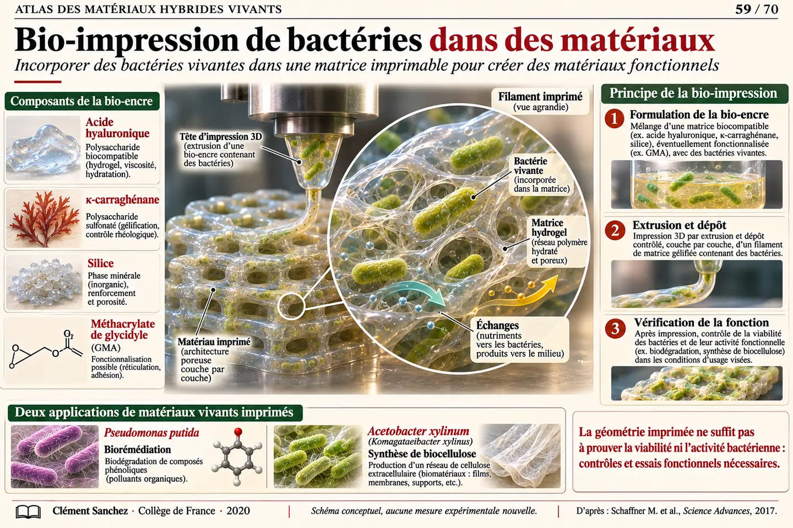
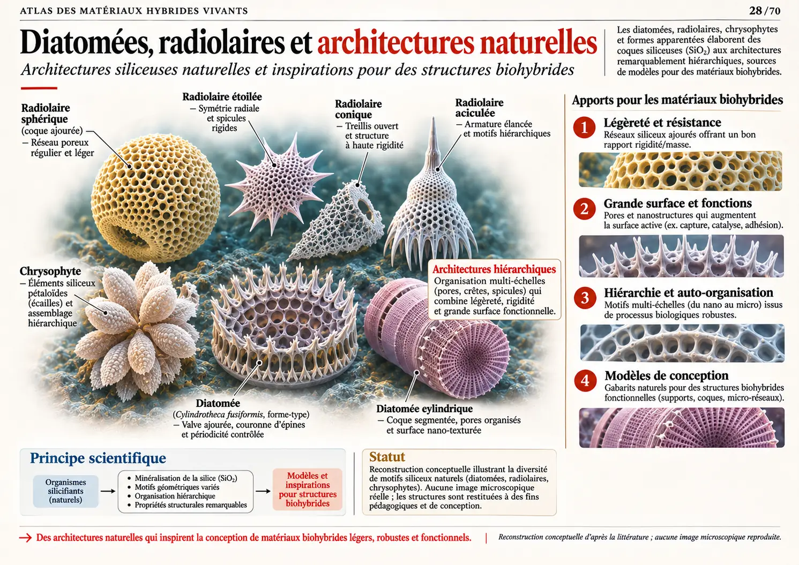
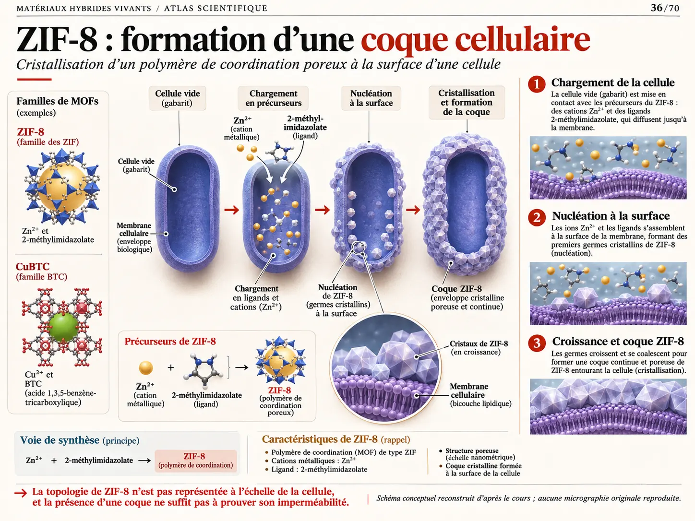
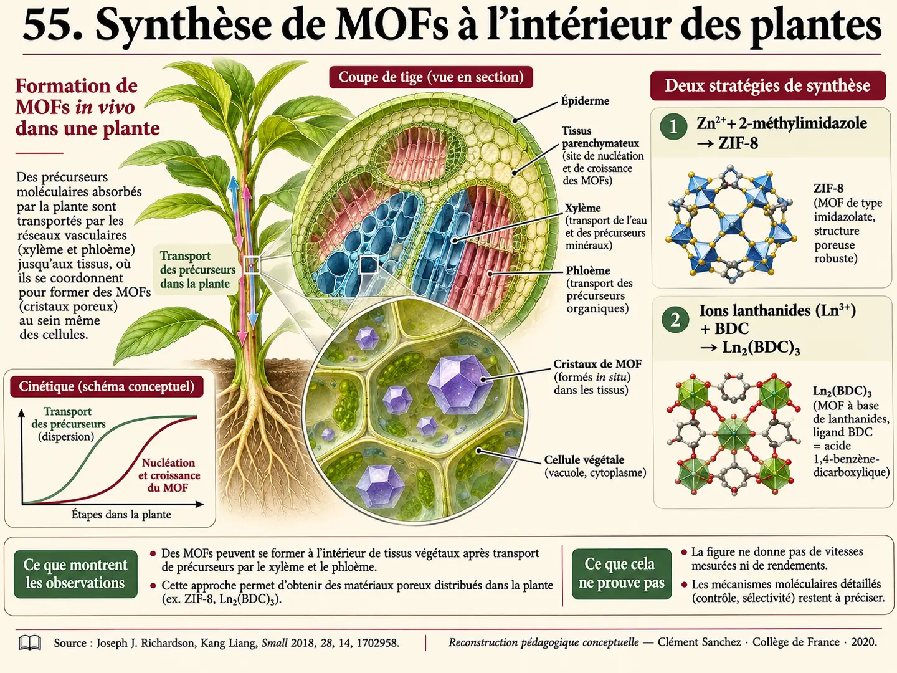
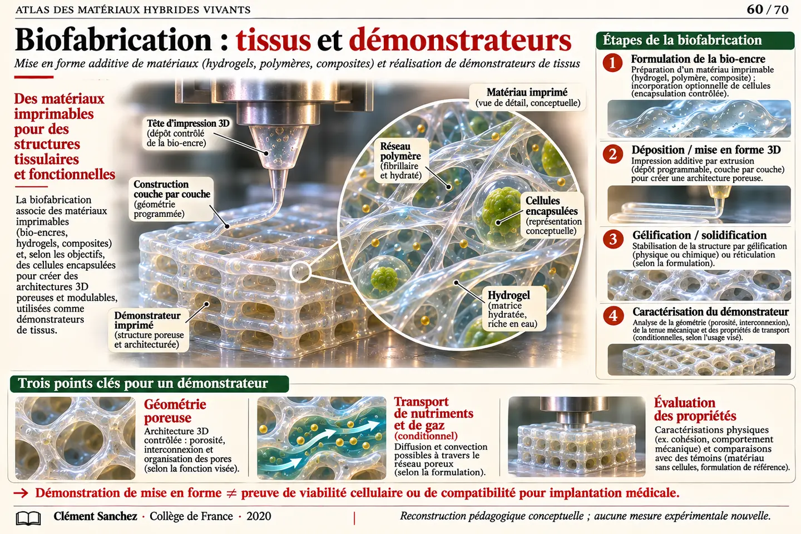

Tu sélectionnes les découvertes et programmes actuels qui méritent la place principale, et ce qui ne doit pas encore être rendu public.
Direction artistique · Expérience scientifique · Architecture web
La science
déjà illustrée.
Notre rôle n’est pas de refaire le site. Il est de prendre sa richesse graphique et scientifique actuelle comme grammaire de référence — puis de l’étendre aux innovations contemporaines de Clément Sanchez.
Dossier de contre-audit réalisé sur les actifs de production du dépôt GitHub : cinq planches redessinées directement examinées, architecture documentaire et mécanismes WebGL étudiés. Ce document montre les œuvres existantes et sépare leurs évolutions proposées des résultats scientifiques validés.
BASE : dépôt
sebitarivas-hue/cm2-kpop, branche main, 22.11.2026 · AUCUNE MODIFICATION DU SITE PUBLIC · CONTRÔLES DE RENDU NAVIGATEUR ET DROITS À COMPLÉTER
01 — Ce qui est déjà réussi
Une identité.
Pas un thème.
Le site possède déjà un vocabulaire d'image reconnaissable : objets scientifiques spectaculaires, annotations ancrées sur la matière et scénarios explicatifs. Le conserver constitue la première décision de DA.
Un objet au centre
Représentation dense du matériau, à échelle généreuse, avec vraie présence visuelle : transparence, porosité, surface, matière organique, contraste de phases.
La science autour
Zooms, coupes, séquences, typologie moléculaire, relations anatomiques, cartouches et mécanismes précisément positionnés.
Une preuve au pied
Source, date, statut de reconstruction et limites épistémiques. Cette dernière couche doit être aussi visible que le récit principal.
À préserver
Titraille spectaculaire, sérif imprimée, mots d'accent rouge profond, panneaux de protocole vert foncé, scénographie de matière à grande échelle, richesse organique et composition multi-niveaux. Ne pas réduire à des cartes standardisées.
À rationaliser, pas supprimer
Variantes de polices et de CSS entre modules, tailles parfois trop petites sur mobile, concurrence entre métadonnées de source et illustrations, statuts d'images non uniformisés. Un design system doit rendre la complexité accessible, pas la gommer.
02 — Audit d'œuvres réelles
Cinq planches.
Cinq leçons.
Ces images sont chargées directement depuis les fichiers du site. Cliquer pour les agrandir : la composition et la microtypographie sont essentielles à l'analyse.

Leçons : encyclopédie de formes, zoom sur structures, vocabulaire de matériau et inspiration biohybrideConserver l'ampleur de la scène centrale. Sur téléphone : lecteur par régions et légendes synchronisées, pas miniature illisible.



Ce que le site fait déjà très bien
Les planches font coexister un objet quasi tactile, une chaîne expérimentale, plusieurs échelles et les informations qui permettent d'en comprendre les fonctions.
Ce que la revue scientifique doit trancher
Le caractère conceptuel de certains détails photoréalistes ; la validité des légendes moléculaires ; l'attribution des figures et des sources ; l'impossibilité de déduire survie, rendement ou activité de la seule géométrie.
03 — Les 3D déjà construites
Du dessin
au phénomène.
L'ambition n'est pas de faire tourner une jolie molécule. C'est d'ouvrir la planche et d'en extraire les processus, les couches, les états et les données — avec un niveau de fidélité déclaré.
Un seul matériau = plusieurs vues scientifiques reliées, non un volume artificiel universel.Laboratoires existants : atlas 18 scènes · diffusion / sol–gel / MOF · atelier d'ingénierie
D0
Illustrer le mécanismeRelation, étapes, fonctionnement hypothétique. Modèle explicite « schématique non quantitatif ».D1
Reproduire une forme documentéeStructure ou morphologie appuyée sur une microscopie ou des dimensions mesurées.D2
Charger une structure réelleCIF / PDB / coordonnées atomiques sourcées, maille, unités, incertitudes et licence.D3
Calculer et confronterÉquations, conditions, validation expérimentale ou numérique, limites et reproductibilité.Proposition d'interaction pour planche 36
Ce diagramme est une proposition de scénarisation issue de la planche 36 — il ne doit pas être confondu avec une mesure, un CIF ou un résultat de simulation.
Vraie interaction,
vraies limites.
- Tourner, isoler, couper, zoomer, réinitialiser.
- Changer de niveau d'échelle avec une transition explicite.
- Afficher la source de la géométrie et des liaisons.
- Pour toute modification de paramètre : distinguer « changement de représentation » et « calcul ».
- Conserver les modèles didactiques déjà codés, sans les rebaptiser simulations scientifiques validées.
04 — Architecture d'une seule œuvre
Un parcours.
Des centaines de portes.
Ne pas isoler les publics dans trois sites qui se répètent. Chaque objet doit posséder une fiche canonique, puis trois niveaux de lecture : découverte, recherche, application.
01 / ACCUEILInnovation actuelleRésultats datés, statut et sélection validée par Clément
02 / IDÉELeçon inauguraleNaissance d'une pensée, termes et héritages
03 / OBJETPlanche sourceFigures originales / reconstruction / limites
04 / MÉCANISMEAtelier 3DÉtapes, données, paramètres, niveau D0–D3
05 / PREUVEBibliographieDOI, protocole, auteurs, statut scientifique
06 / TRANSFERTIndustrieBrevet, titulaire, pilote, produit si prouvé
Pour Clément
Chaque axe scientifique devient un parcours qu'il peut approuver indépendamment. Les sujets confidentiels ou susceptibles de polémique ne sont pas publiés, même si une illustration est terminée.
Sur téléphone
La planche reste entière en aperçu, puis se lit région par région. Les panneaux s'ouvrent sans masquer la matière ; les annotations suivent le zoom, les sources et limites restent accessibles.
05 — Bibliographie & traçabilité
Chaque image
a une source.
Le site dispose déjà d'une bibliographie navigable pour la leçon de 2020. L'extension à l'œuvre entière implique une construction éditoriale et documentaire méthodique, pas l'ajout mécanique de liens DOI.
| Objet | Ce qui existe | Ce qu'il reste à construire | Validation |
|---|---|---|---|
| 70 planches | 70 originaux et reconstructions réparties dans l'atlas | Comparaison harmonisée, statut par région et liens aux articles | Figure + légendes + droits |
| 18 scènes 3D | Objets WebGL et relations avec un grand nombre de planches | Fidélité D0–D3 visible ; coordonnées et validations D2/D3 si disponibles | Données + protocole + limitations |
| 38 notions | Graphe sémantique associé au cours 2020 | Définitions pérennes et liens vers cours, travaux récents et applications | Relecture scientifique |
| 53 cours + inaugurale | Index officiel structuré en branche documentaire | Choix de Clément, médias, documents et planches autorisées | Attribution + droit de reprise |
| Publications | Bibliographie 2020 + source institutionnelle historique + 5 dossiers 2025–2026 | Dédoublonnage, DOI, type de document, preuve des conclusions | Source primaire, auteur, date |
| Industrie | Premiers dossiers de brevets et partenariats recensés | Familles, détenteurs, statut juridique et preuve éventuelle d'exploitation | Ni licence ni produit supposés |
Une seule notice par ressource
Une publication pourra être retrouvée depuis la planche, le cours, le laboratoire, la biographie et l'application — mais sans duplication de contenu ni contradiction d'attribution.
Ne pas fabriquer une filiation
Une recherche japonaise, chinoise, russe ou américaine sur un sujet proche n'est pas automatiquement une collaboration de Sanchez. Les co-publications vérifiées doivent être distinguées des rapprochements thématiques.
Bibliothèque du site : bibliographie existante · monographie du cours 2020 · atlas des planches. Les dossiers additionnels sont pour l'instant dans la branche documentaire, non en production.
06 — Tickets de direction technique
Améliorer.
Sans détruire.
La dette à corriger est ciblée et traçable. Les choix validés et les visuels existants constituent une référence de non-régression.
| Ticket | Constat code actuel | Décision de développement | Critère de réussite |
|---|---|---|---|
| DA-01 | Superposition de plusieurs styles éditoriaux et laboratoire | Formaliser les tokens et les responsabilités CSS sans remaquetter arbitrairement | Mêmes invariants visuels sur les six espaces |
| VIS-02 | Préférence original/reconstruction traitée différemment selon les vues | Résolveur canonique d'image et statut scientifique visible | 70/70 fiches contrôlées |
| UX-03 | Planches riches illisibles en réduction sur mobile | Lecteur de régions zoomables avec légendes ancrées | Tests 320–1440 px, clavier et zoom 200 % |
| 3D-04 | Modèles didactiques et WebGL sans dossier D2/D3 universel | Fiches de fidélité, source des structures, validation et état initial stable | Une scène D2 traçable + dossier de test |
| BIB-05 | Corpus bibliographique principalement autour du cours 2020 | Référentiel interconnecté des œuvres et publications avec DOI | Zéro fusion de notices ambiguës |
| EDIT-06 | Accueil centré sur « matériaux hybrides vivants » | Placer les innovations actuelles approuvées au premier plan | Clément valide la sélection et les titres |
07 — La décision de Clément
Chaque étape
avec toi.
Il ne s'agit pas de te demander de valider un projet entier d'un seul coup. Nous soumettrons des pièces identifiables, avec un avant/après, une note scientifique, un état de droits et une version à conserver.
Nous partons des planches déjà réalisées. Tu approuves les évolutions de mise en page, les couleurs secondaires et les types de schémas.
Pour chaque modèle, validation du sens des étapes, des échelles, de la géométrie et de ce qui est réellement mesuré ou simulé.
Chaque mise en ligne nécessite une relecture des assertions, sources, légendes et applications. Une correction n'affecte pas le reste du corpus.
Les premiers travaux restent sur une branche de revue ; la mise en production n'intervient qu'après décision explicite.